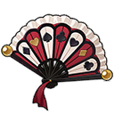
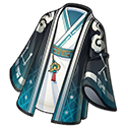
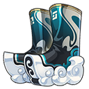
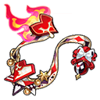

추천 광추
내일에 바치는 색채
방어력·치유 지원
효과 자세히
방어력 환산 환락도와 생존을 함께 확보.
그녀가 보기로 결심했을 때
속도와 환락 팀 지원
효과 자세히
효광 전광이 남는 경우.
다음 꽃피는 계절의 만남
환락 지원 대안
효과 자세히
에바네시아 전광을 보유한 경우.
슈룸 모험기
망각의 정원 상점 대안
효과 자세히
무료 중첩 선택.
추천 유물
꿈같은 유희 속 별을 밝히는 연극인 4 · 부러진 용골 2
- 머리
 주옵션HP부옵션속도 · 방어력%
주옵션HP부옵션속도 · 방어력% - 손

주옵션공격력부옵션속도 · 방어력% - 몸통 주옵션치유량 / 방어력%부옵션속도 · 방어력% (주옵션 제외)
- 다리
 주옵션속도부옵션방어력%
주옵션속도부옵션방어력% - 구체
 주옵션방어력%부옵션속도
주옵션방어력%부옵션속도 - 매듭
 주옵션에너지 회복효율부옵션속도 · 방어력%
주옵션에너지 회복효율부옵션속도 · 방어력%
이 조합을 추천하는 이유
미학의 저본 환락도 지원. 솜씨 보유 시 팀 효저 +50%로 용골 기준 30%를 충족한다. 소진 후에는 발동 여부 확인.
천명에 응해 먼 길을 떠난 점술가 4 · 신의 순간의 환락 2
- 머리
 주옵션HP부옵션속도 · 방어력%
주옵션HP부옵션속도 · 방어력% - 손
 주옵션공격력부옵션속도 · 방어력%
주옵션공격력부옵션속도 · 방어력% - 몸통

주옵션치유량 / 방어력%부옵션속도 · 방어력% (주옵션 제외) - 다리

주옵션속도부옵션방어력% - 구체
 주옵션방어력%부옵션속도
주옵션방어력%부옵션속도 - 매듭

주옵션에너지 회복효율부옵션속도 · 방어력%
이 조합을 추천하는 이유
파티에 4환락이 필요할 때도 사용. 다른 팀원이 동일한 환락 지원 효과를 쓰는지 확인.
이 정도면 잘 키웠다
동일 파티·광추 기준 · 조건 [*]
| 스탯 | 추천 스탯 | 준종결 | 종결 |
|---|---|---|---|
| 방어력 [*] 승급 2단계에서 방어력이 환락도·치유량으로 이어진다. | 마을 2,500 | 마을 3,000 | 마을 3,500 |
| 속도 [*] 필살기 순환을 위한 가이드 범위. | 마을 160 | 마을 170 | 마을 180 |
| 효과 저항 [*] 솜씨 보유 중 승급 4단계로 팀 효과 저항 +50%. 용골의 자체 +10%를 합치면 60%+. 솜씨 소진 후에는 용골 발동선 30% 유지 여부 확인. | 전투 50%+ | 전투 50%+ | 전투 50%+ |
육성 단계의 기준
Lv.80·유물 +15 기준. 입문·중간 목표는 육성 편의를 위한 단계이며, 완성값의 버프와 편성 조건은 각주를 확인.
성혼과 추천 돌파
환락 4인 생존·버프는 1돌, 팀 행동과 웃음 자원 확대는 2돌.
1환락 2/3/4인 → 팀 환락도 +10/20/60%추천
치명 피해 2회 방지 후 해당 아군 HP 50% 회복.
2팀 환락 피해 15% 증소추천
저본 외 환락 아군도 당김. 보너스 턴 웃음·훌륭한 솜씨 2배.
3필살기 +2 · 일반 공격·환락 스킬 +1
해당 스킬과 대응 강화 스킬의 레벨을 올린다.
4환락 스킬의 팀 추가 환락 피해 배율 2배
입가의 흐릿한 미소를 해석하고
5전투 스킬·특성 +2 · 환락 스킬 +1
해당 스킬과 대응 강화 스킬의 레벨을 올린다.
6심층 학습 중 팀 저항 관통 +20%
강화 일반 공격에 저본 스탯 기준 얼음 환락 피해 240% 추가.
추천 파티


기본 운영과 행적
기본 운영
필살기를 주 딜러에게 지정. 4환락이면 저본 보너스 턴을 활용하고, 회복이 필요할 때 스킬로 팀 HP를 보강.
행적 육성 순서
환락 스킬 → 필살기 → 일반 공격 → 전투 스킬·특성. 6단계 환락 아군 필살기에 연동하는 에너지 우선.
아하 속도 계산기 →기준과 출처 · 2026-11-25
4.7 게임 데이터 · Prydwen 개별 빌드